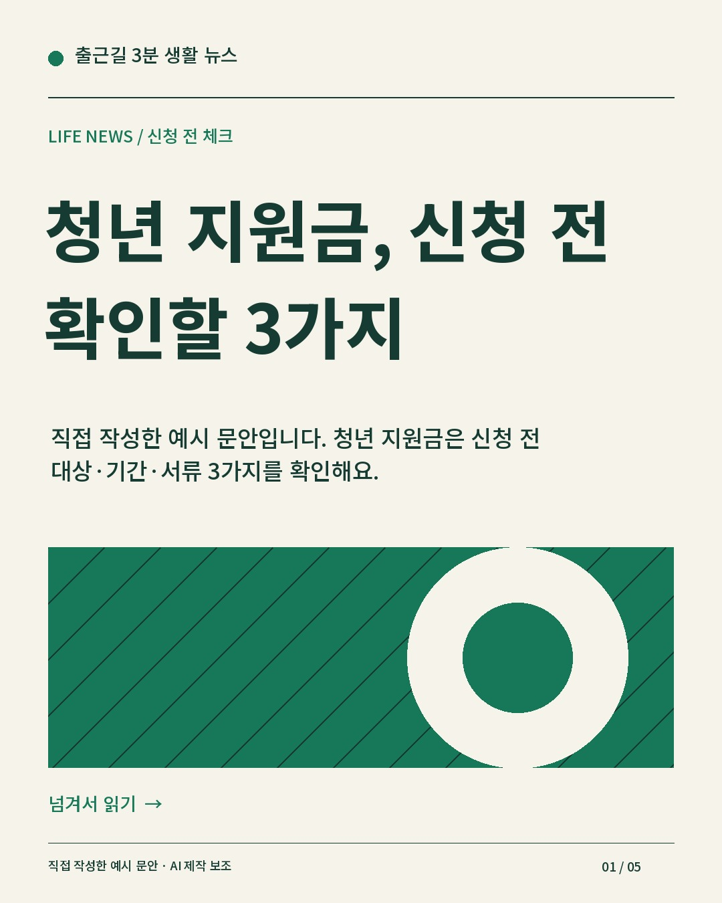
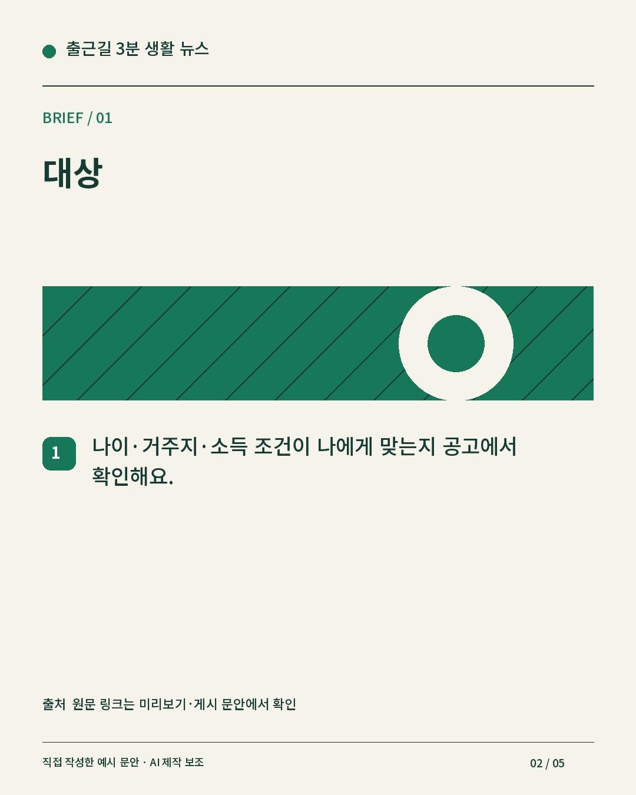
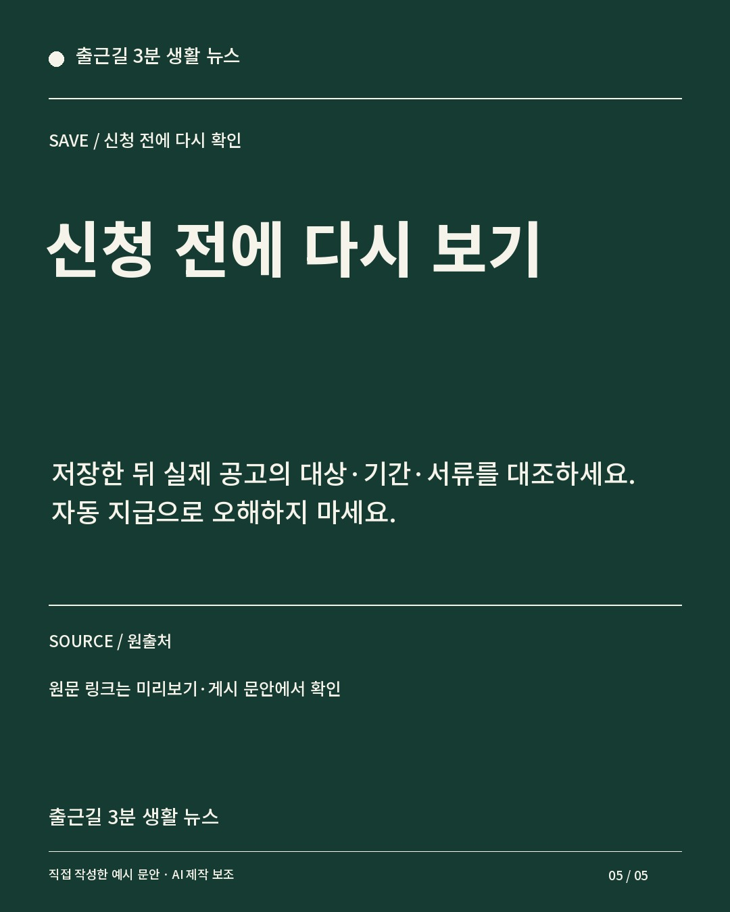

직접 작성한 예시 문안입니다. 청년 지원금은 신청 전 대상·기간·서류 3가지를 확인해요. 대상: 나이·거주지·소득 조건이 나에게 맞는지 공고에서 확인해요. 기간: 접수 시작일과 마감일을 확인하고 달력에 적어요. 서류: 필요한 서류와 발급 방법을 확인해 미리 준비해요. 신청 전에 다시 보기: 저장한 뒤 실제 공고의 대상·기간·서류를 대조하세요. 자동 지급으로 오해하지 마세요.



mock 음성은 설명용 신호음입니다. 대본 자막은 장면 시간에 배분하며 음성 정렬을 하지 않습니다.